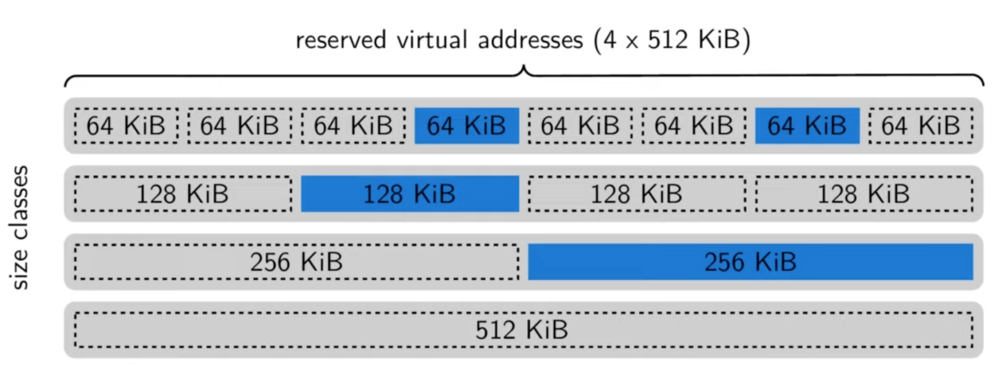
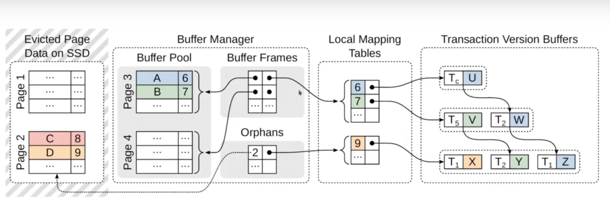
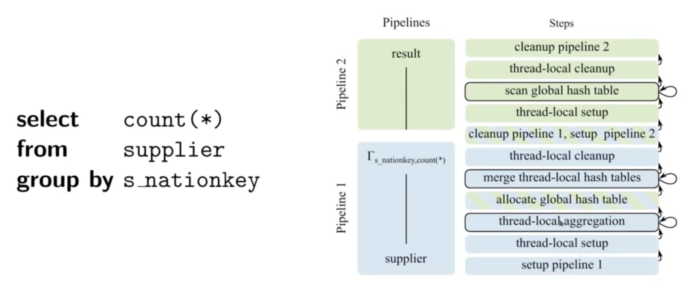

Remarks
Umbra has done a lot optimisations to get in-memory performance on a hybrid system. They adaptive query compiler that uses LLVM & generates machine code is the most interesting part.
Motivation
- Worked on a purely in-memory system (HyPer) earlier.
- Pure in-memory systems are fast but expensive.
- Growth in memory sizes stalled compared to what was expected.
- Now, SSD-based systems are quite fast & cheaper than main memory (DRAM). ($500 vs $20000 for 2TB).
- SSD-based systems can still use large in-memory buffers.
- Working set (not the entire dataset) often fits entirely into main memory.
- But, using traditional buffer management limits performance even though everything is in memory.
What Umbra Does
- Combine large in-memory buffers w/ fast SSDs
- Novel buffer manager allowing in-memory performance
- Umbra is an evolution of HyPer towards an SSD-based system
- Comparable performance if working set fits in main memory
- Transparent scaling beyond main memory when required
- Some parts like the compiling query execution engine is the same as HyPer
- Key additions & adaptations
- Scalable buffer management with variable-size pages
- Adaptive compilation & modular execution engine
- Statistics maintenance
- String handling (didn’t talk about this)
Buffer Management
- Traditional approach : Fixed-size pages
- Benefits of using fixed size pages: Recovery, memory management is easy, Less fragmentation
- Requires explicit partitioning of large objects
- Complex code to handle large objects
- Simple buffer manager but complex system
- Reduced performance due to partitioning logic
- Umbra’s approach: Variable-size pages
- Large objects are handled transparently
- Can store in-memory representation of large object on single page (for faster lookups)
- No complex partitioning logic required
- Increased complexity of buffer manager
- Main problem: External fragmentation of buffer pool
- How they fixed the problem with external fragmentation
- Exploit flexible mapping b/w virtual & physical memory
- Pages are organized in exponentially growing size classes
- Fixed virtual addresses are reserved for each size class
- Mapping to physical memory only for pinned buffer frames
- Available virtual memory range is allocated repeatedly w/ different size classes to get a space with multiple granularities.
- 
- If a large page is needed & consecutive space isn’t available then free small pages can be de-allocated (which tells the OS to cut the link b/w virtual & physical address space) to get the contiguous physical space for the large page.
- Sidenote: https://pages.cs.wisc.edu/~remzi/OSTEP/vm-freespace.pdf (see Buddy Allocation)
- Q/A : Are there any issues w/ changing the virtual-physical mapping very often like increasing the size of kernel data strictures or blowing out the TLB cache? I’ve heard that using mremapto do this kind of fast re-alloc can cause other memory access to be slower.
- We don’t use mremap because that’s indeed bad. We just tell the OS to unlink which keeps the mapping simple & linear. There’s still a cost though when you change the size which shoots down the TLB of other cores so we don’t like to do this very often. We prefer to keep memory is a certain size & only move it if we really have to. But it’s not terribly expensive. You can do this a few hundred times / second and that’s okay but you don’t want to do this a million of times.
- Q/A : How does flush work when backed by variable size pages?
- Writing to disk isn’t any different compared to fixed size pages. The thing to be careful about is recovery. You don’t want to change the size of the page since 2 small pages could be over-written by a large page which is unsafe since you aren’t sure if the header with the LSN number is in the correct place.
- Q/A : Do you use huge page for mapping so that when you unmap a 64KiB slot, it can be remapped elsewhere instead of using 2MiB & ending up with a page splitting on a map?
- We don’t use transparent huge pages.
- Extra TLB pressure for finer granularity.
- Exploit flexible mapping b/w virtual & physical memory
- Variable-size pages alone aren’t sufficient for high performance.
- Compared to a purely in-memory systems, traditional buffer managers have other bottlenecks like acquiring a latch for every page that is accessed, pinning & unpinning pages & the root of the BTree being highly contentious.
- Performance Optimizations:
- Pointer swizzling
- Versioned latches
- Pointer Swizzling
- Decentralized mapping from page IDs to memory addresses
- Centralized hash table is a major bottleneck in highly parallel architectures
- Use tagged pointers to encode both PIDs (for disk-resident pages) & memory addresses (for memory-resident pages) so that you can avoid the hashtable lookup for already resolved pages
- Pointer swizzling lets you access a page cheaply without a hashtable lookup.
- Inner BTree node is composed of “swip” & “key” where “swip” is a potentially swizzled pointer (page id if page not in memory OR the physical pointer to the page if in memory).
- Now, if you follow a page id from a page, we check if you already resolved this & if yes then we just jump there. If not, then we have to acquire a lock & do IO anyway.
- Cost: When you evict the page, you must invalidate the swip otherwise another reader might think that the page is there when it’s not.
- Hydra currently has only 1 incoming swip. Ideally, you must have a low number of incoming swips because you need to invalidate them when you evict a page.
- Decentralized mapping from page IDs to memory addresses
- Versioned Latches
- Traditionally, you’d grab a R-W lock / latch on the root even if you just need to do reads. Determine where you need to go, then latch the child, release the root & so on. Most of the time is spent on acquiring the mutex for the root even if there’s no logical contention.
- A versioned latch is just a single 64-bit integer counter which can be locked in different modes (optimistic, shared or exclusive).
- We remember how many exclusive unlocks we did in the versioned latch. This allows you to check if there was a change.
- Modes
- Shared: Read-only access
- Exclusive: Read-write access
- Optimistic: Read-only access, no locks, requires validation & may fail
- Needs to wait if the node already holds an exclusive lock
- Note: If you optimistically latch a page, the page might disappear while you’re reading. In the buffer manager implementation, if a page is evicted, we just read the zero page. Reader must be aware of this.
- Relations
- Relations are stored in B+ trees.
- Keys are synthetic (not visible to user) 8-byte tuple IDs.
- PAX layout within leaf pages.
- Concurrent access synchronized through optimistic latch coupling
- User versioned latches provided by buffer manager
- Rely on optimistic latches during non-modifying traversal
- Leaf pages shared mode for scans, optimistic mode for point access
- You need to validate after every read in optimistic locking. In particular, the pages holding a string can go away at any time. For point access, you can just copy the string & then check after if it’s still valid but we don’t want to do this during scans to avoid copying strings.
- Relations are stored in B+ trees.
MVCC on disk
- We want to avoid writing to disk due to the high overhead. So a mixed solution is used.
- 
- Regular Case: Use an in-memory representation of the txn
- Argument: Majority of txn are small (a few hundred tuples)
- Maintain version chains exclusively in-memory
- Attach to DB pages through local mapping tables
- Retained by buffer manager when pages are evicted (re-attached when page comes back)
- When txns are large (eg. touching all the tuples in the DB) , we don’t want to have in-memory representation because it’s very expensive.
- Bulk Operations
- Argument: Bulk operations are infrequent.
- Give exclusive bulk write access to relation.
- Use two bit (created, deleted) per tuple to create “virtual versions”
- Virtual version consume no physical memory
- Proper isolation of arbitrarily large bulk operations
Statistics
- Statistics are essential for query optimization to determine things like how many tuples qualify for a predicate, how many distinct values they’ve for a group by etc.
- In HyPer, they used sample for this. When the data changed too much, it was recomputed in-memory. We don’t want to do this on disk due to read amplification.
- Umbra uses reservoir sampling. While the data is inserted, updated or deleted; a sample is maintained all the time so it’s always available & doesn’t need to be recomputed. They use some algorithm to predict the skip length b/w the hits & the reservoir sample. Then figure out which tuple would be relevant for the sample & insert it in the sample.
- How to do this in a multi-threaded way? Skips b/w tuples are pre-computed. Skips are handed to threads on-demand which are responsible for skipping this many tuples until one qualifies.
- Each thread locally counts down until a relevant tuple is encountered.
- Note: Length of skips increases over time. Larger the sample, more likely that tuple is less relevant.
- Samples are great for predicated but poor for distinct (/group by) counts.
- Maintain HyperLogLog sketches for all columns.
- Sidenote: There are some systems that try to solve for the IO cost by sampling pages instead of tuples but avoid doing this since this creates sampling bias in the data.
Compilation & Execution
- In the I/O case, we might want to pause our query but if our query is just a function we called then it’s difficult to pause. So we compile queries (physical execution plans) into state machines.
- Query pipelines consist of multiple steps i.e. generated functions.
- Viewed as states w/ well defined transitions.
- Query executor orchestrates invocation of steps.
- This is useful for both the I/O case & for scheduling long running queries (we don’t want someone to wait until the long running query is gone to run a cheap query).
- Eg: 
- Q/A: Is this implemented as a co-routine or as small functions?
- Behaves as co-routine but implemented as generated functions with explicit state.
- Q/A: Did you consider the SQL OS approach where they have small functions (at most 6ms)?
- We didn’t because the SQL OS co-routines does memory allocation for its own state. We want to control memory.
- Advantages of modular execution plans
- Query execution can easily be suspended (eg. on high IO pressure)
- Enables fine-grained parallelization of pipelines.
- Steps are compiled adaptively
- Each function can be compiled separately.
- Code generation employs custom IR similar to LLVM IR.
- Initially translated into machine code using a low-latency backend.
- If beneficial, translated into LLVM IR & just-in-time (JIT) compiled.
- Eg: Very few instructions are needed for something like “allocate a hashtable” so no point in optimizing that. Only done when the step is determined to be expensive.
- Note: The query is running & not stopped for this. They compile in background & switch while executing.
- Low-latency compilation
- Compile time is a problem is compiling engine. LLVM has super linear compile time for large functions.
- So they started directly emitting machine code.
- Machine code generation wasn’t as difficult as register allocation (which requires detecting loops & doing lifetime computations) but implementing register allocation guarantees almost linear compile time.
- Optimized LLVM is used adaptively & only when beneficial.
- Sidenote:
- LLVM will take 14s to compile a function w/ 2K joins & 4s if asked to do it cheaply. Their custom compiler does it in 33ms.
- LLVM w/ optimizations enabled produces more performant code but takes more time so it’s not worthwhile for most parts of the query.
- Q/A: Would a vectorized runtime do any better? We’re trying to optimize for I/O stalls in our query plan. Would a vectorized engine be easier/better to use?
- Vectorized engine is fine for OLAP workloads but compiled engines are significantly better for OLTP workloads since the vectorization overhead becomes noticeable when only a few tuples are used.
- Q/A: Do you cache query plans to avoid compiling?
- Compile times are so low that we don’t cache query plans anymore.
Experiments
- System comparison: In memory, warm cache
- On Join Order Benchmark (JOB): 3x faster than HyPer, 4.6x than MonetDB.
- On TPCH: 1.7x faster than Hyper, 1.9x faster than MonetDB.
- Note: Faster than HyPer not because of faster runtime but because of better statistics & query plans.
- Cost of buffer manager
- Replaced buffer manager by flat mmap files.
- Similar performance w/ minor performance fluctuations (6% avg., 30% max).
- Read perf. w/ cold caches
- Buffer manager & flat mmap files perform equal.
- Full utilization of SSD read bandwidth in both cases.
- Buffer manager much faster than mmap under high concurrency.
- Sidenote: mmap is awful for highly parallel reads due to lock contention.
Conclusion
- Umbra offers the best of both worlds
- Perf. of an in-memory system if data fits into main memory
- Scalability of a disk-based system beyond main memory
- Made possible by
- Efficient & scalable buffer management w/ variable-size pages
- Novel modular execution plan model & adaptive query compilation
- Further adaptations to statistics maintenance & string handling
Q/A
- Do you use a fixed page size for the internal leaf node or a fixed tuple count? Do you target being just under a size that’s power of 2 to reduce fragmentation?
- We try to reach the 64KiB size in the B-Tree leaf pages but we’ll use a larger page for larger data. Inner nodes always have 64KiB pages because the keys are tuple ids.
- Do you use 64KiB size for under-full pages too? Do you merge pages on delete?
- It’s very unlikely for pages to be under-full. We try to put as many tuples as possible in the pages.
- We merge on delete.
- In the indirection trick (pointer swizzling) do you use using pre-fetching or just cache misses?
- IIRC, first time you go down, you just fill the cache. For multiple lookups, we remember where we have to go next & pre-fetch the page.
- Do you have a fixed no. of threads running the queries or do you allocate new threads as queries come?
- We’ve a fixed no. of threads equal to the number of cores. It doesn’t make any sense to have more threads than cores because they can’t run concurrently. We schedule query to thread.
- If you’ve a fixed no. of threads, then you’ve some OLAP queries taking a lot of time & then there’ll be some OLTP queries. How do you decide the scheduling of these queries so that OLTP queries have low latency & OLAP queries can still execute fast?
- We use decaying priority i.e. the longer the query runs the lesser its priority.
- When you pause a query, do you place some checkpoint or do you just pause the thread?
- The multi-threaded steps are using morsel driven parallelism i.e. the threads process a few thousand tuples & then fall back to the scheduling function & if someone decides that you thread should yield then you stop at the next morsel boundary & switch to another query.
- You mentioned that you use only 1 thread per core so do none of these threads block on I/O. Does the CPU not get saturated?
- We aren’t happy w/ this part yet. We use NVMe SSDs which have pretty low latency so we block synchronously on I/O (which is unlikely in itself). But if your device isn’t a very fast SSD then you don’t want to do this. You need another thread which hands out pages to other workers. Workers should never block for long times.
- If you’re using the NVMe PCI SSDs then could you redirect the I/O to those threads that are running on the cores that are directly attached to those PCI slots?
- Good idea. Didn’t implement this in Umbra. We did something similar in HyPer where we prefer to read memory from local NUMA nodes. We’d re-schedule threads to read from the local node. Could do something similar in Umbra too.
- How does the DB decide to use LLVM to compile the query plan? Is there some statistics to help predict the speed-up from the optimized LLVM?
- We keep track of the progress in each pipeline. We predict how long we’ll need to finish. We’ve a model (basically a polynomial function) that tells how expensive it’s to compile something w/ LLVM & the expected speed-up. If worthwhile then we start compilation & switch but if the remaining running time is not significant then we don’t.
- Is this similar to what you were doing w/ HyPer as mentioned in the ICD paper?
- We switched b/w a virtual machine or 2 LLVM nodes in HyPer but we stopped doing this. Our initial backend is different now.
- Do you have async I/O abilities enabled w/ something like io_uring or the Windows I/O ring? Does that impact your ability to schedule things into async work?
- We use io_uring for background threads that do I/O & hands pages to worker threads when available.
- PAX encoding on leaf pages. How do you navigate the tension b/w dense encodings, low runtimes & CPU overhead on decoding those encodings? Do you use run-length encoding on the PAX pages?
- Text layout is optimized for OLTP workload. Not heavily compressed.
- We’ve a different backend for OLAP where we do run length encoding but not for OLTP.
- Since you mentioned OLAP, what do you think about non-CPU execution resources since CPU is tapering off in frequency & core counts. What do you think about GPU or even CPU SIMD instructions?
- We use SIMD instructions for filtering during scans for tables etc.
- We tried using GPU for acceleration but the issue was that when the data is large than GPU memory (which is usually the case), you’ve to transfer data in & out of the GPU which tends to ruins the perf. advantage you gain from GPU. Gains weren’t impressive enough to do in our main systems.
- Is Umbra still pg compatible? What level of compatibility does it have (SQL grammar, catalogs, other functionality)?
- Same grammar & wire protocol so a pg driver can be used.
- A few catalog tables are exposed for drivers to work.